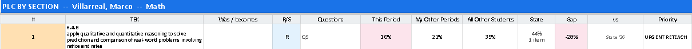
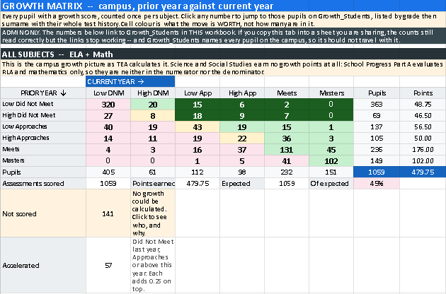
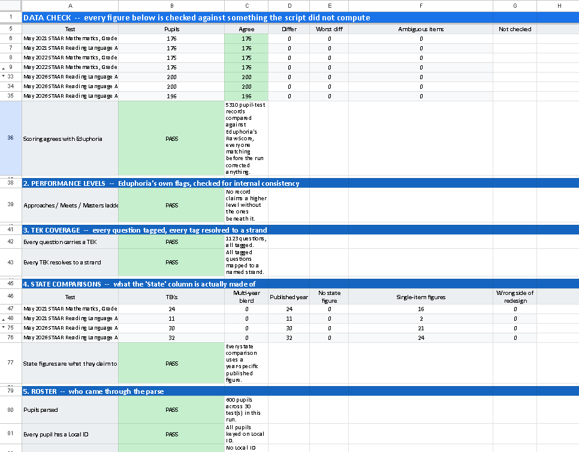

The three questions districts ask first
Is student data safe?
It runs only inside your district's own Google Sheet. It can reach only that one sheet, and it sends nothing anywhere.
Are the numbers right?
Every run, a Data_Check tab compares its scores with Eduphoria's own Raw Score for every student.
How much work is it?
About 20 minutes to set up once. Each run takes 2–4 minutes for a typical campus.
What a teacher does with it
Three patterns.
Three moves.

On every teacher's tab, by class period
- TEKS ranked worst-first, with a priority label
- Pull groups with the exact questions each student missed
- On the Edge: students within 15 points of a cut score
- Last year, same students: how they did on the standard this one grows from
- Class over time: every STAAR since 3rd grade
See every feature and the tests it reads
- TEKS tableTEA's wording, Readiness or Supporting, the questions that tested it, and four columns: this period, your other periods, all other students, and a state comparison. URGENT RETEACHStrategic ReteachThe BubbleSolid MasteryCommend & Extend
- Last year, same studentsUses TEA's vertical alignment. Example: "6.5.G 64% → 27%, −37% (22 students)." Math and Reading.
- Pull groupsFor the five weakest TEKS. Split into "this is their only gap" and "this isn't their only gap," with SpEd, EB, and ED flags.
- Reporting categories in plain words"Weakest in this period → warm-up" or "low across your periods → reteach."
- Support groupsEach student group compared with its own class and with the same group elsewhere.
- Class over timeSix bands (Low/High Did Not Meet, Low/High Approaches, Meets, Masters). Spanish years are marked.
- Growth into this testLast year's growth points for the students this teacher is receiving.
- LinksReleased tests and teaching resources for that grade and subject.
Grades 3–8
Math, Reading/RLA, Science, Social Studies
End of course
Algebra I, English I, English II, Biology, U.S. History
Spanish STAAR, 3–5
Spanish and English versions combined automatically
The state comparison is that year's published figure where one exists, otherwise a multi-year average. The tab says which.
For coaches & campus leaders
Growth, and proof
the numbers are right.
- Growth_Matrix: TEA's 6-by-6 School Progress table for Reading and Math, with the students behind every number. It follows TEA's method; it can differ slightly from TEA's official numbers because TEA excludes some score codes.
- Growth_Students: every student behind every growth number. Admin only.
- Data_Check: PASS or CHECK on scoring, performance levels, TEK coverage, and the roster, with the rows named. Open it first.
See the growth table and Data_Check


How it was checked
Built with AI.
Verified against the source.
I built it with an AI coding assistant (Claude Code). I decided what teachers need and checked every rule against TEA's published documents.
answer cells scored as expected
Every STAAR test, grade 3 through U.S. History, English and Spanish.
automated test suites
Run against the real script files.
on a 600-student demo
First run, start to finish.
Setup
About 20 minutes, once.
Paste 2 script files into a blank Google Sheet, import your Eduphoria export, and run it twice.
7 script files
Ready to paste into Apps Script.
Demo workbook
600 invented students, grades 6–8. Try it before your own data.
Quick Start + Setup Guide
One page, and four pages step by step.
See the 7 setup steps
- Make a blank Google Sheet in your district Google account.
- Extensions → Apps Script. Paste in the 7 script files, each named exactly as given, and save.
- In Eduphoria Aware, pick up to 7 STAAR tests. Choose Student Individual Responses, then Edit → Columns and add Current Period, Current Instructor, demographics, and Date Taken. Click the student icon and Export to Excel.
- File → Import the Excel file into your sheet.Import, don't paste. The tool reads Eduphoria's answer colors.
- STAAR Analyzer → Run Analysis. Allow access once. The Config tab appears.Google may show an "unverified app" page first. That's expected. A district Google admin can mark the script Trusted to remove it.
- Run Analysis again. Every teacher has a tab in 2–4 minutes.
- Open Data_Check first, then the teacher tabs.
Privacy details and good-to-know limits
- No internet calls, no email, and it doesn't touch Drive.
- Every demo and screenshot uses invented students only.
- While it was being built, the AI assistant saw code and header rows, never a student row.
- Google limits each run to 6 minutes on personal accounts and 30 minutes on district accounts.
- Personal Gmail accounts always show the "unverified app" page.
- It reads Eduphoria Aware's export layout. Another platform would need the reader adjusted.
- Your district's own data and AI policy always comes first.
AI helper available by request. A Gemini Gem for setup questions, shared on setup calls, for use only inside a district Google Workspace account.
Not in the free download
The full district version
STAAR plus NWEA MAP and district tests (DCBs, CFAs, BOY/MOY/EOY) in one workbook.
Free setup help
Book a free 20-minute call.
- Email me your district, your role, and which tests you want to run.
- I reply with a few times.
- We run it together on the demo data, then check your export's header row.
austin.lee.edu@gmail.com · No cost, no sales pitch.
New to Texas assessment terms? Glossary
- STAAR
- The Texas state test.
- EOC
- End-of-course STAAR: Algebra I, English I, English II, Biology, U.S. History.
- TEKS
- Texas standards. 6.4.B means grade 6, knowledge statement 4, student expectation B.
- Readiness / Supporting
- TEA's emphasis label for each tested standard.
- Reporting category
- TEA's groups of standards on each test.
- Performance bands
- Did Not Meet, Approaches, Meets, Masters. The tool splits the lower two into Low and High.
- School Progress, Part A
- TEA's growth measure: each student's move from last year's band earns 0, 0.5, or 1 point.
- Eduphoria Aware
- The assessment platform the data comes from.
- PLC
- Professional learning community: teacher teams who meet over data.